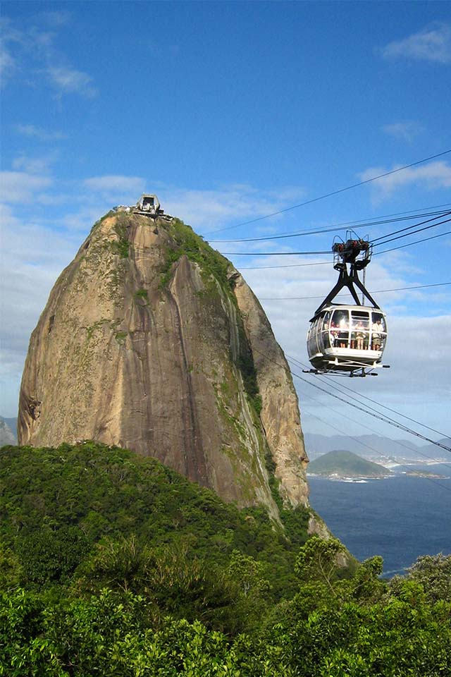

Brasil
El Pais de la playa
Lugares mas visitados

Porto Seguro
Una ciudad con construcciones viejas, pero con servicios modernos y espacios para el descubrimiento de la vida cultural y nocturna de uno de los lugares turísticos más visitados.
Playa de Copacabana
Esta es la playa más famosa de Río de Janeiro, aquí encontrarás el mayor número de alojamientos y los famosos bares patrimoniales de Río, por lo que es uno de los mejores lugares de Brasil para hospedarte.
Brasilia
Brasilia es la capital de Brasil y es donde te encontrarás con la modernidad frente a frente. No puedes perderte la Catedral de Brasilia, uno de los grandes atractivos culturales de Brasil.
Archipiélago
Fernando de Noronha
Este archipiélago volcánico brasileño está conformado por 21 islas, de las cuales solo una está habitada y lleva el mismo nombre que el archipiélago.
Es considerado el mejor lugar para bucear.

Porto de Galinhas
La playa Porto de Galinhas fue escogida siete veces como la mejor playa de Brasil por la revista Viagem e Turismo. La playa cuenta con piscinas naturales y su propia barrera de coral que se puede acceder en marea baja por jangadas (pequeñas barcas).
Florianopolis
Es la capital de Santa Catarina, uno de los importantes destinos al sur de Brasil, ya que está calificada como de los mejores lugares del país para conocer. Cuenta con 24 playas y un centro de actividades náuticas.
Cristo Redentor
Por ser catalogado como una de las 7 maravillas del mundo, si vas a Río de Janeiro es imposible irte sin haber visto esta enorme estatua de Jesús de Nazaret. Mide 30 metros de altura y pesa 1200 toneladas, su base mide 8 metros de alto justo en la cima del Cerro del Corcovado.
Buzios
Ubicada a 180 kilómetros al nordeste de Río de Janeiro, pasó a ser de una tranquila aldea de pescadores a uno de los destinos más famosos y buscados en el 2019 para el disfrute. Además de tener encantadoras playas, posee una excelente arquitectura de casas tradicionales.

Palacio do Planalto
El Palacio do Planalto es la sede del poder ejecutivo del gobierno brasileño y fue parte del plan piloto de Brasilia, es decir uno de los primeros construidos y por lo tanto uno de los lugares importantes en Brasil y de su historia.

Pao de Azucar
Este pico es uno de los más llamativos entre lo varios morros de Brasil. Un teleférico de cristal artesonado con capacidad para 65 pasajeros, recorre una ruta de 1.401 metros entre los morros de Babilonia y Urca cada cinco minutos.
Descripción:
Garotas, caipirihna, samba, baile, capoeira, todas estas palabras evocan el soleado Brasil, perfecto para unas vacaciones inolvidables.
Desde los lugares típicos de Brasil como el Casco Histórico de Porto Seguro, hasta espacios increíbles donde podrás conectarte con la naturaleza como el Parque Nacional Marino de Albrolhos, este país te ofrece una gama infinita de espacios donde podrás escoger el estilo que mejor se adapte a ti.